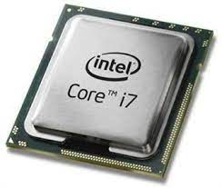

หน่วยรับข้อมูล

หน่วยประมวลผลกลางเป็นส่วนประกอบฮาร์ดแวร์ที่เป็นหน่วยคำนวณหลักในเซิร์ฟเวอร์ เซิร์ฟเวอร์และอุปกรณ์อัจฉริยะอื่นๆ จะแปลงข้อมูลเป็นสัญญาณดิจิทัลและดำเนินการทางคณิตศาสตร์กับอุปกรณ์เหล่านั้น CPU เป็นองค์ประกอบหลักที่ประมวลผลสัญญาณและทำให้สามารถประมวลผลได้ ซึ่งทำหน้าที่เป็นสมองของอุปกรณ์ประมวลผลต่างๆ โดยจะดึงคำสั่งจากหน่วยความจำ ดำเนินการตามที่จำเป็น และส่งเอาต์พุตกลับไปยังหน่วยความจำ จัดการงานประมวลผลทุกประเภทที่จำเป็นสำหรับเรียกใช้ระบบปฏิบัติการและแอปพลิเคชันต่างๆ